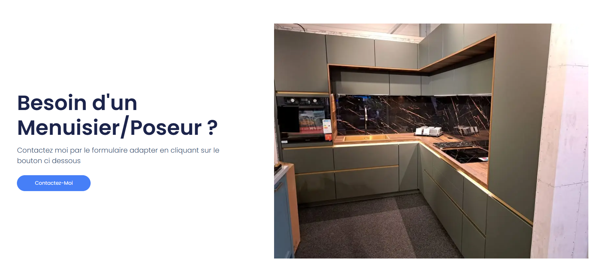

Contexte
Réalisation d'un site vitrine avec WordPress pour une petite entreprise, avec besoin de gestion d'agenda centralisé et synchronisé avec le smartphone du gérant.
Fonctionnalité clé : intégration d'un agenda Google Calendar connecté via API avec le téléphone du gérant. L'agenda est visible et modifiable uniquement par un utilisateur authentifié sur le site.

Réalisation d'un site vitrine avec WordPress pour une petite entreprise, avec besoin de gestion d'agenda centralisé et synchronisé avec le smartphone du gérant.